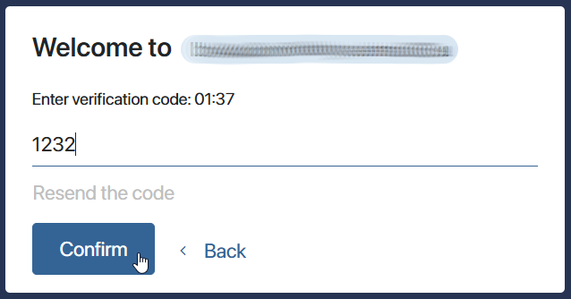

You can enable two‑step authentication when logging in to the system or the external portal, so that a user enters a verification code as the second factor. The user will receive this code through a third‑party service, for example a messenger.
To do this, create a custom module and then select it:
- In the security settings to enable two-factor authentication when logging in to the system.
- In the settings of the external portal on the Authentication tab to enable two-factor authentication for internal users when they log in to the portal.
начало внимание
Only users included in the Administrators group can work with modules and configure them.
конец внимание
For example, let's configure receiving a verification code through a Telegram bot by following these steps:
- Configure receiving a code from a third‑party service.
- Create and configure a module.
- Enable the module for the second authentication factor.
Step 1: Configure receiving a code from a third-party service
- Go to Telegram.
- Create a bot. Read more in the official Telegram documentation.
- Copy the bot token.
- Use the token to get a chat ID for the user. You can use the following method:
- A user writes any message to the created bot.
- After that the system administrator receives the user's chat ID with the bot.
To do this:
- Enter the following request in the browser:
https://api.telegram.org/bottoken/getUpdates, wheretokenis the token received when creating the bot. - In response to this request, you see a JSON text on the browser page, which contains the chat ID.
{ |
- Specify the chat ID in the Accounts field in the user profile. If the ID is not specified, the employee will only log in using the login and password.
Step 2: Create and configure a module
Go to Administration > Modules and create a module. Then configure the settings on the Settings page that opens:
- On the Settings tab, create String-type properties that will be used in the script for receiving a verification code via a messenger bot:
- Account Type (
accountType). The name of a third-party service through which two-factor authentication is configured. - Bot Token (
botToken). The bot ID on the external service side. Issued when creating a bot. - Message (
message). The message that a user will receive along with the verification code. For example, “To log in to BRIX, please enter this verification code: ”.
If all the properties are specified, go to the Common tab and click Save.
- Go to the API Methods tab and click Edit. The method editor will open. Then, on the Scripts tab, write the code using the following template:
// This interface will allow you to set conditions in the function below that will prompt the user for the second factor authentication code
interface SecondFactor_sendError { error: string; skip2fa: boolean; }
// This function identifies a user login by the ID and receives a confirmation code
async function secondFactor_sendCode(userID: string, code: string): Promise<SecondFactor_sendError> {}
Example script for searching for a user login by the chat ID with a Telegram bot
interface SecondFactor_sendError {
|
Step 3: Enable the module for the second authentication factor
- Go to Administration > Modules, open the module page and enable it.
- In the window that opens, fill in the fields:
- Bot token. Add the value of the copied token.
- Account type. Add a name of a third-party service.
- Message. Add the text to be displayed before the verification code.

- Save the settings. The module is ready for use.
- Go to Administration > Security Settings > Two-Factor Authentication and select the configured module for the second authentication factor.
Now, if the user has their Telegram bot chat ID specified in their profile, the employee will receive a confirmation code when logging in.

Found a typo? Select it and press Ctrl+Enter to send us feedback